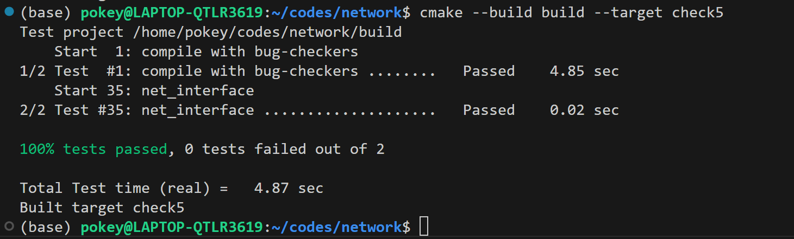

My name: 何旭
My ID: 502024330015
class arp_item, which is used to record the entries in the ARP table.public:
EthernetAddress eth_addr;
size_t ttl;
class NetworkInterface I created some private member variables.private:
unordered_map<uint32_t, arp_item> arp_table_ {};
unordered_map<uint32_t, size_t> arp_5_ {};
unordered_multimap<uint32_t, InternetDatagram> arp_ip_waiting_ {};
arp_table_ is the ARP table, and its entries are a mapping from IP addresses to the aforementioned arp_itemarp_5_ is used to record the lifespan of ARP messages that have been sent but not yet received a reply. The initial value of the entry is set to 5ms, and it gets updated with each use of the void tick( size_t ms_since_last_tick ) function. Its purpose is to prevent sending the same ARP message if another one with the same destination is sent within 5ms.arp_ip_waiting_ is used to record InternetDatagrams that are waiting to be sent, but at the moment, the ARP information for the destination address is not yet available.Because it may contain multiple InternetDatagrams with the same IP address, I use unordered_multimap as the container.void NetworkInterface::send_datagram( const InternetDatagram& dgram, const Address& next_hop )EthernetHeader to the InternetDatagram to form an EthernetFrame, and send it out. EthernetAddress dst = it->second.eth_addr;
EthernetAddress src = ethernet_address_;
EthernetHeader header { .dst = dst, .src = src, .type = EthernetHeader::TYPE_IPv4 };
EthernetFrame frame { .header = header, .payload = serialize( dgram ) };
transmit( frame );
InternetDatagram into arp_ip_waiting_ to record it.if ( arp_5_.find( next_address ) == arp_5_.end() ) {
EthernetAddress target_eth = EthernetAddress {};
ARPMessage arp { .opcode = ARPMessage::OPCODE_REQUEST,
.sender_ethernet_address = ethernet_address_,
.sender_ip_address = ip_address_.ipv4_numeric(),
.target_ethernet_address = target_eth,
.target_ip_address = next_address };
EthernetAddress dst = ETHERNET_BROADCAST;
EthernetAddress src = ethernet_address_;
EthernetHeader header { .dst = dst, .src = src, .type = EthernetHeader::TYPE_ARP };
EthernetFrame frame { .header = header, .payload = serialize( arp ) };
transmit( frame );
arp_5_.emplace( next_address, 5000 );
}
arp_ip_waiting_.emplace( next_address, dgram );
void NetworkInterface::recv_frame( const EthernetFrame& frame )arp_table_ accordingly. if ( frame.header.dst != ETHERNET_BROADCAST && frame.header.dst != ethernet_address_ )
return;
EthernetHeader::TYPE_IPv4, it can be received directly. If the frame is of EthernetHeader::TYPE_ARP, we need to determine whether it is a request or a reply.if ( frame.header.type == EthernetHeader::TYPE_IPv4 ) {
InternetDatagram datagram;
if ( !parse( datagram, frame.payload ) )
return;
datagrams_received_.emplace( datagram );
}else if ( frame.header.type == EthernetHeader::TYPE_ARP ) {
ARPMessage arp_msg;
if ( !parse( arp_msg, frame.payload ) )
return;
uint32_t src_ip = arp_msg.sender_ip_address;
uint32_t dst_ip = arp_msg.target_ip_address;
EthernetAddress src_eth = arp_msg.sender_ethernet_address;
arp_table_[src_ip] = { src_eth, 30000 };
...
}
if ( arp_msg.opcode == ARPMessage::OPCODE_REQUEST && dst_ip == ip_addressipv4_numeric() ) {
ARPMessage arp_reply { .opcode = ARPMessage::OPCODE_REPLY,
.sender_ethernet_address = ethernet_address_,
.sender_ip_address = ip_address_.ipv4_numeric(),
.target_ethernet_address = src_eth,
.target_ip_address = src_ip };
EthernetHeader header { .dst = src_eth, .src = ethernet_address_,
.type = EthernetHeader::TYPE_ARP };
EthernetFrame send_frame { .header = header, .payload = serialize( arp_reply ) };
transmit( send_frame );
}
arp_table_ and arp_5_, then send out all the datagrams in arp_ip_waiting_ that are waiting for the corresponding Ethernet address.else if ( arp_msg.opcode == ARPMessage::OPCODE_REPLY ) {
arp_table_[src_ip] = { src_eth, 30000 };
arp_5_.erase( src_ip );
for ( auto it = arp_ip_waiting_.begin(); it != arp_ip_waiting_.end(); ++it ) {
if ( it->first == src_ip )
send_datagram( it->second, Address::from_ipv4_numeric( src_ip ) );
}
arp_ip_waiting_.erase( src_ip );
}
void NetworkInterface::tick( const size_t ms_since_last_tick )for ( auto iter = arp_table_.begin(); iter != arp_table_.end(); ) {
if ( iter->second.ttl <= ms_since_last_tick )
iter = arp_table_.erase( iter );
else {
iter->second.ttl -= ms_since_last_tick;
++iter;
}
}
arp_5_ by retransmitting any entries whose lifespan is less than or equal to 0.for ( auto iter = arp_5_.begin(); iter != arp_5_.end(); ++iter ) {
if ( iter->second <= ms_since_last_tick ) {
ARPMessage arp_request { .opcode = ARPMessage::OPCODE_REQUEST,
.sender_ethernet_address = ethernet_address_,
.sender_ip_address = ip_address_.ipv4_numeric(),
.target_ethernet_address = {},
.target_ip_address = iter->first };
EthernetHeader header {
.dst = ETHERNET_BROADCAST, .src = ethernet_address_, .type = EthernetHeader::TYPE_ARP };
EthernetFrame frame { .header = header, .payload = serialize( arp_request ) };
transmit( frame );
iter->second = 5000;
} else
iter->second -= ms_since_last_tick;
}
void NetworkInterface::recv_frame( const EthernetFrame& frame ), I had a doubt about whether I need to update the arp_table_. Initially, I thought updates were only needed when receiving an ARP reply, but during debugging, I encountered this issue.The test "learn from ARP request" failed after these steps:
0. Initialized std::pair<NetworkInterface, std::shared_ptr<FramesOut> > with
eth=8e:fe:79:1e:a0:e3, ip=5.5.5.5
1. Action: frame arrives (dst=ff:ff:ff:ff:ff:ff src=fe:ad:08:1b:e5:f4 type=ARP
payload: opcode=REQUEST, sender=fe:ad:08:1b:e5:f4/10.0.1.1,
target=00:00:00:00:00:00/5.5.5.5)
2. Expectation: frame transmitted (dst=fe:ad:08:1b:e5:f4 src=8e:fe:79:1e:a0:e3 type=ARP
payload: opcode=REPLY, sender=8e:fe:79:1e:a0:e3/5.5.5.5, target=fe:ad:08:1b:e5:f4/10.0.1.1)
3. Expectation: no frame transmitted
4. Action: request to send datagram (to next hop 10.0.1.1): IPv4 len=25 protocol=6
ttl=128 src=5.6.7.8 dst=13.12.11.10
***** Unsuccessful Expectation: frame transmitted (dst=fe:ad:08:1b:e5:f4 src=8e:fe:79:1e:a0:e3
type=IPv4 payload: IPv4 len=25 protocol=6 ttl=128 src=5.6.7.8 dst=13.12.11.10
payload="hello") *****
ExpectationViolation: NetworkInterface sent a different Ethernet frame than was expected:
actual={dst=ff:ff:ff:ff:ff:ff src=8e:fe:79:1e:a0:e3 type=ARP payload: opcode=REQUEST,
sender=8e:fe:79:1e:a0:e3/5.5.5.5, target=00:00:00:00:00:00/10.0.1.1}
